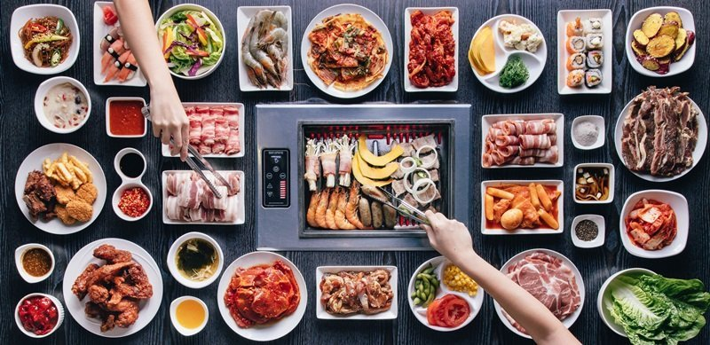

Korea has one of the best education systems in the world! Surpassing America by a lot.
Aside from that they have amazing food such as; tofu soup, bulgogi, galbi. Along with popular deserts such as 16,000 strings of honey also known as Dragon's beard candy here in America.
My mom grew up in Korea for the first 11-12 years of her life before moving to America. She grew up in Seoul with her mom, dad, sister, and brother.
It has been over twenty years since she's been back but wishes to go soon. As soon as the drama with North Korea settles down we will probably go with our family!
Other than the food this is one of the main reasons why I would like to go 👍🏻
It is the second tallest point in South Korea at 236 meters. The tower is Korea's first radio wave tower first opened in 1980.
https://i.hungrygowhere.com/business/32/71/12/00/i-m-kim-korean-bbq-concept-shot-2_800x0_crop_800x800_e3a9b7020f.jpg
https://upload.wikimedia.org/wikipedia/commons/thumb/0/0f/Flag_of_South_Korea.png/1024px-Flag_of_South_Korea.png
https://img.clipartxtras.com/c7a15886667f3f4727068057ae3d3dd8_png-globe-clipart-transparent-background_2070-2062.png